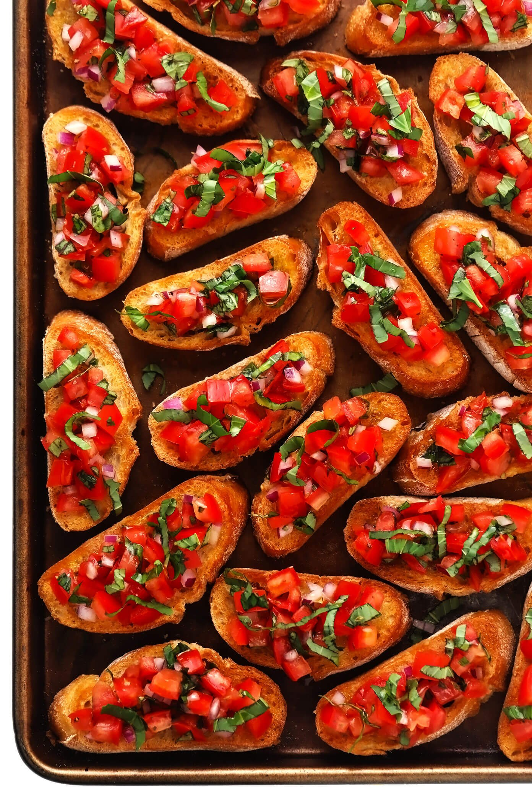

Bruschetta

Ingredients
- 6-7 ripe tomatoes
- 2 cloves garlic minced (about 2 tsps)
- 1 TBS extra virgin olive oil
- 1 tsp balsamic vinegar
- 6-8 fresh basil leaves, thinly sliced or chopped
- 3⁄4 tsp sea salt, more or less to taste
- 1⁄2 tsp freshly ground black pepper, more or less to taste
- 1 baguette french bread or similar italian bread
- 1⁄4 cup olive oil
Blanch and peel the tomatoes. Bring 2 quarts of water to a boil. As the water is heating make shallow cuts in a cross pattern at the tip ends of the tomatoes (this will make the tomatoes easier to peel).
Once the water is boiling, remove the pot from the heat. Put scored tomatoes in the hot water and blanch for 1 minute.
Remove with a slotted spoon and let sit until cool enough to handle. Then gently peel off the tomato skins. Cut out the stem base with a paring knife.
Cut the tomatoes into halves or quarters and squeeze out most of the juices and seeds.
Preheat oven to 450°F with a rack in the top slot of the oven.
Chop tomatoes, toss them with garlic, olive oil, vinegar, basil, salt, and pepper: finely chop the tomatoes and place them in a medium bowl. Mix in the minced garlic, 1 TBS extra virgin olive oil, and balsamic vinegar.
Stir in the thinly sliced basil and add salt and freshly ground black pepper, adding more to taste. Note, tomatoes love salt; you may need to add more than you expect.
Toast the baguett slices: Use a bread knife to slice the baguette on the diagonal making half-inch thick slices. Brush one side of each slice with olive oil (a pastry brush helps here) and place olive oil-side down on a baking sheet or roasting pan.
The baguette slices will toast best in the top rack of your oven, so you may need to work in batches to toast them all.
When the oven has reached 450°F (230°C) place the slices in the oven on the top rack and toast for 5 to 6 minutes until lightly browned around the edges.
Serve toasted bread with tomato mixture: Arrange the toasted bread on a platter, olive oil side facing up (the olive oil will help create a temporary barrier keeping the bread from getting soggy from the chopped tomatoes).
Either serve the toasts plain with a bowl of the tomato bruschetta mixture on the side for people to top their own, or use a spoon to gently top each toasted bread slice with some of the tomato mixture. If you top each slice individually, do it right before serving.